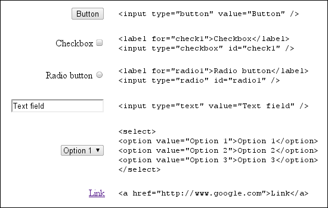
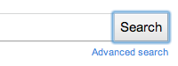

Except as otherwise noted, the content of this page is licensed under the Creative Commons Attribution 3.0 License, and code samples are licensed under the BSD License.
©2011 Google
When you design an extension, try to make it as accessible as possible to people with disabilities such as visual impairment, hearing loss, and limited dexterity.
Everyone — not just people with special needs — can benefit from the alternative access modes that accessible extensions provide. For example, keyboard shortcuts are important for blind people and people with limited dexterity, but they also help power users get things done more quickly without using a mouse. Captions and transcripts give deaf people access to audio content, but they are also useful to language learners.
People can interact with your extension in a variety of ways. They might use a standard monitor, keyboard, and mouse, or they might use a screen magnifier and just a keyboard. Another possibility is a screen reader, an assistive application tool that interprets what's displayed onscreen for a blind or visually impaired user. A screen reader might speak out loud or produce Braille output.
Although you can't predict what tools people will use, by following a few simple guidelines you can write an extension that is more likely to be accessible to more people. The guidelines on this page aren't going to make your extension accessible for absolutely everyone, but they're a good starting point.
First, use UI controls that support accessibility. The easiest way to get an accessible control is to use a standard HTML control. If you need to build a custom control, keep in mind that it's much easier to make the control accessible from the beginning than to go back and add accessibility support later.
Try to use standard HTML UI controls whenever possible. Standard HTML controls (shown in the following figure) are keyboard accessible, scale easily, and are generally understood by screen readers.
ARIA is a specification for making UI controls accessible to screen readers by means of a standard set of DOM attributes. These attributes provide clues to the screen reader about the function and current state of controls on a web page. ARIA is a work in progress at the W3C.
Adding ARIA support to custom controls in your extension involves modifying DOM elements to add attributes Google Chrome uses to raise events during user interaction. Screen readers respond to these events and describe the function of the control. The DOM attributes specified by ARIA are classified into roles, states, and properties.
The ARIA attribute role
is an indication of the control type
and describes the way the control should behave.
It is expressed with the DOM attribute role,
with a value set to one of the pre-defined ARIA role strings.
Because ARIA roles are static,
the role attribute should not change its value.
The ARIA Role Specification
holds detailed information on how to pick the correct role.
For example, if your extension includes a toolbar,
set the role attribute of the toolbar's DOM element as follows:
<div role="toolbar">
ARIA attributes are also used to describe the current state and properties of controls of a particular role. A state is dynamic and should be updated during user interaction. For example, a control with the role "checkbox" could be in the states "checked" or "unchecked". A property is not generally dynamic, but is similar to a state in that it expresses specific information about a control. For more information on ARIA states and properties, refer to the W3C States and Properties specification.
Note: You don't have to use all of the states and properties available for a particular role.
Here's an example of adding
the ARIA property aria-activedescendant
to the example toolbar control:
<div role="toolbar" tabindex="0" aria-activedescendant="button1">
The
aria-activedescendant
property specifies which child of the toolbar receives focus
when the toolbar receives focus.
In this example, the toolbar's first button
(which has the id "button1")
is the child that gets focus.
The code tabindex="0"
specifies that the toolbar
receives focus in document order.
Here's the complete specification for the example toolbar:
<div role="toolbar" tabindex="0" aria-activedescendant="button1"> <img src="buttoncut.png" role="button" alt="cut" id="button1"> <img src="buttoncopy.png" role="button" alt="copy" id="button2"> <img src="buttonpaste.png" role="button" alt="paste" id="button3"> </div>
Once ARIA roles, states, and properties are added to the DOM of a control, Google Chrome raises the appropriate events to the screen reader. Because ARIA support is still a work in progress, Google Chrome might not raise an event for every ARIA property, and screen readers might not recognize all of the events being raised. You can find more information on ARIA support in Google Chrome in the Chromium Accessibility Design Document.
For a quick tutorial on adding ARIA controls to custom controls, see Dave Raggett's presentation from WWW2010.
Make sure that operation and navigation controls of your extension can receive keyboard focus. Operation controls might include buttons, trees, and list boxes. Navigation controls might include tabs and menu bars.
By default, the only elements in the HTML DOM
that can receive keyboard focus
are anchors, buttons, and form controls.
However, setting the HTML attribute tabIndex to 0
places DOM elements in the default tab sequence,
enabling them to receive keyboard focus.
For example:
element.tabIndex = 0
Setting tabIndex = -1 removes the element from the tab sequence
but still allows the element to receive keyboard focus programmatically.
Here's an example of setting keyboard focus:
element.focus();
Ensuring that your custom UI controls include keyboard support is important not only for users who don't use the mouse but also because screen readers use keyboard focus to determine which control to describe.
People should be able to use your extension even if they can't or don't want to use a mouse.
Check that the user can navigate between the different parts of your extension without using the mouse. Also check that any popups on page actions or browser actions are keyboard navigable.
On Windows, you can use Shift+Alt+T to switch the keyboard focus to the toolbar, which lets you navigate to the icons of page actions and browser actions. The help topic Keyboard and mouse shortcuts lists all of Google Chrome's keyboard shortcuts; details about toolbar navigation are in the section Google Chrome feature shortcuts.
Note: The Windows version of Google Chrome 6 was the first to support keyboard navigation to the toolbar. Support is also planned for Linux. On Mac OS X, access to the toolbar is provided through VoiceOver, Apple's screenreader.
Make sure that it's easy to see which part of the interface has keyboard focus. Usually a focus outline moves around the interface, but if you’re using CSS heavily this outline might be suppressed or the contrast might be reduced. Two examples of focus outline follow.
Although the most common keyboard navigation strategy involves using the Tab key to move focus through the extension interface, that's not always the easiest or most efficient way to use the interface. You can make keyboard navigation easier by providing explicit keyboard shortcuts.
To implement shortcuts, connect keyboard event listeners to your controls. A good reference is the DHTML Style Guide Working Group’s guidelines for keyboard shortcuts.
A good way to ensure discoverability of keyboard shortcuts is to list them somewhere. Your extension’s Options page might be a good place to do this.
For the example toolbar,
a simple JavaScript keyboard handler could look like the following.
Note how the ARIA property aria-activedescendant
is updated in response to user input
to reflect the current active toolbar button.
<head>
<script>
function optionKeyEvent(event) {
var tb = event.target;
var buttonid;
ENTER_KEYCODE = 13;
RIGHT_KEYCODE = 39;
LEFT_KEYCODE = 37;
// Partial sample code for processing arrow keys.
if (event.type == "keydown") {
// Implement circular keyboard navigation within the toolbar buttons
if (event.keyCode == ENTER_KEYCODE) {
ExecuteButtonAction(getCurrentButtonID());
// getCurrentButtonID defined elsewhere
} else if (event.keyCode == event.RIGHT_KEYCODE) {
// Change the active toolbar button to the one to the right (circular).
var buttonid = getNextButtonID();
// getNextButtonID defined elsewhere
tb.setAttribute("aria-activedescendant", buttonid);
} else if (event.keyCode == event.LEFT_KEYCODE) {
// Change the active toolbar button to the one to the left (circular).
var buttonid = getPrevButtonID();
// getPrevButtonID defined elsewhere
tb.setAttribute("aria-activedescendant", buttonid);
} else {
return true;
}
return false;
}
}
</script>
<div role="toolbar" tabindex="0" aria-activedescendant="button1" id="tb1"
onkeydown="return optionKeyEvent(event);"
onkeypress="return optionKeyEvent(event);">
<img src="buttoncut" role="button" alt="cut" id="button1">
<img src="buttoncopy" role="button" alt="copy" id="button1">
<img src="buttonpaste" role="button" alt="paste" id="button1">
</div>
The remaining guidelines might be familiar because they reflect good practices for all web content, not just extensions.
Evaluate your use of text in your extension. Many people might find it helpful if you provide a way to increase the text size within your extension. If you are using keyboard shortcuts, make sure that they don't interfere with the zoom shortcuts built into Google Chrome.
As an indicator of the flexibility of your UI, apply the 200% test. If you increase the text size or page zoom 200%, is your extension still usable?
Also, avoid baking text into images: users cannot modify the size of text displayed as an image, and screenreaders cannot interpret images. Consider using a web font instead, such as one of the fonts collected in the Google Font API. Text styled in a web font is searchable, scales to different sizes, and is accessible to people using screen readers.
Check that there is sufficient contrast between background color and foreground/text color in your extension. This contrast checking tool checks whether your background and foreground colors provide appropriate contrast. If you’re developing in a Windows environment, you can also enable High Contrast Mode to check the contrast of your extension. When evaluating contrast, verify that every part of your extension that relies on color or graphics to convey information is clearly visible. For specific images, you can use a tool such as the Vischeck simulation tool to see what an image looks like in various forms of color deficiency.
You might consider offering different color themes, or giving the user the ability to customize the color scheme for better contrast.
If your extension relies upon sound or video to convey information, ensure that captions or a transcript are available. See the Described and Captioned Media Program guidelines for more information on captions.
Provide informative alt text for your images. For example:
<img src="img.jpg" alt="The logo for the extension">
Use the alt text to state the purpose of the image rather than as a literal description of the contents of an image. Spacer images or purely decorative images should have blank ("") alt text or be removed from the HTML entirely and placed in the CSS.
If you must use text in an image, include the image text in the alt text. A good resource to refer to is the WebAIM article on appropriate alt text.
For an example that implements keyboard navigation and ARIA properties, see examples/extensions/news_a11y (compare it to examples/extensions/news). For more examples and for help in viewing the source code, see Samples.